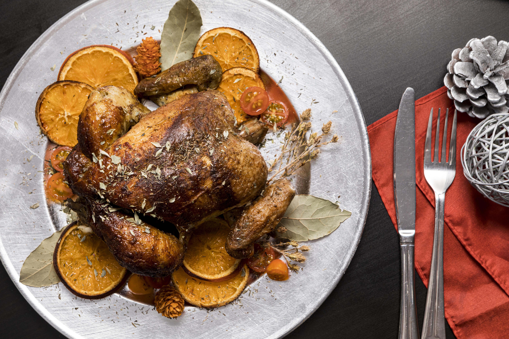
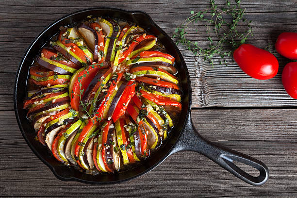
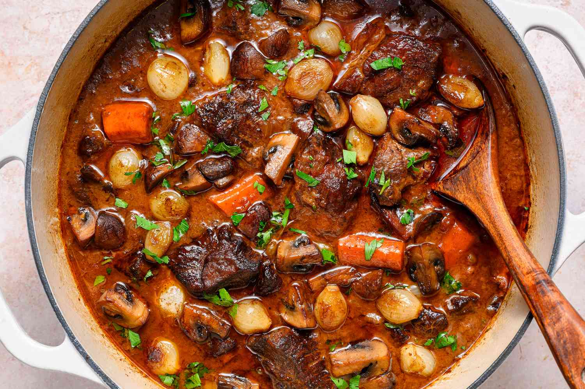
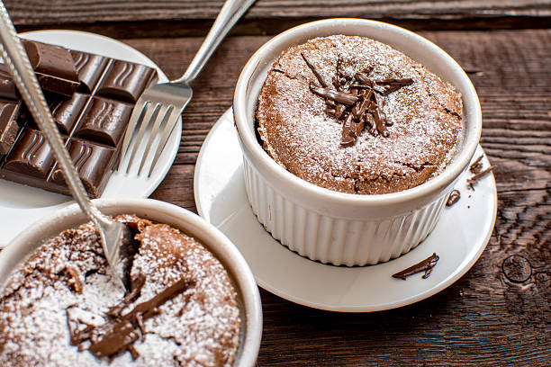

Pratos Disponíveis
| Imagem | Prato | Descrição |
|---|---|---|
|  | Coq au Vin | Frango cozido em vinho tinto com cogumelos, cebolas e bacon. |
 |
Bouillabaisse | Ensopado de frutos do mar típico de Marselha. |
 |
Quiche Lorraine | Torta salgada feita com creme de leite, ovos, queijo e bacon. |
|  | Ratatouille | Prato de legumes assados típico da Provence. |
|  | Boeuf Bourguignon | Ensopado de carne bovina cozida com vinho tinto e legumes. |
|  | Soufflé | Delicada sobremesa feita com ovos e açúcar, doce ou salgada. |